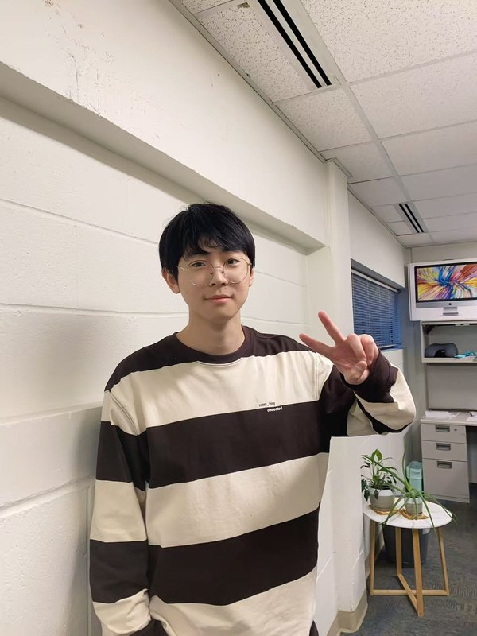

AI for Science · Representation Learning and LLM Agents for Scientific Data
Yikang Li
Ph.D. researcher in Biomedical Engineering · Vanderbilt University · expected 2027
Seeking research scientist roles in AI for science and health, starting 2027

About
AI-for-Science researcher (PhD in Biomedical Engineering, MSc in AI, BSc in Mathematics) building self-supervised representation models and LLM agents for scientific data, from spatial omics to brain imaging. Focus on learning from scarce, noisy, multi-site biomedical data, and on rigorous evaluation of when a model is reliable enough for scientific and clinical use.
Research
ARepresentation learning and pretraining for scientific data
-
BrainVAE
A Transformer-based variational autoencoder pretrained without labels on 1,953 participants, then adapted and fine-tuned for preclinical Alzheimer's disease classification from gray- and white-matter functional connectivity. First-author paper accepted by IEEE Transactions on Biomedical Engineering; oral presentation at ISMRM 2025.
-
TissueLoom Code
A tissue-aware Transformer with tissue-conditioned attention, bidirectional gray–white affinity propagation, and an anatomy-informed readout over 22 brain circuits, applied to fMRI classification. First-author manuscript submitted to Medical Image Analysis.
-
MaskGraphene Paper
An interpretable joint representation framework for multi-slice, multi-condition spatial transcriptomics. Contributed benchmarking and data analysis. Published in Genome Biology, 2025.
-
White-matter functional fingerprints
A graph representation learning pipeline that derives participant-level embeddings from white-matter functional connectivity across cohorts. Accepted as an OHBM 2026 poster.
BScientific agents and evaluation
-
CopathAgent Manuscript in preparation
A tool-calling LLM agent for dementia co-pathology that calls prediction and retrieval tools to integrate longitudinal cognitive data and MRI-derived features across five pathology targets. It uses retrieval-augmented generation over reference criteria and similar training-case summaries, with schema-constrained outputs, source citations, and local inference. Baselines (an adapted Transformer, logistic regression, and random forest) are benchmarked on 7,927 NACC participants with participant-disjoint five-fold cross-validation.
-
Neuro-Audit Code
An open-source MRI manuscript review and drafting assistant backed by versioned literature and methodology rules, with explicit states for source verification and missing evidence.
-
Benchmarking spatial transcriptomics methods Paper
A benchmark of clustering, alignment, and integration methods for spatial transcriptomics. Contributed benchmarking and data analysis. Published in Genome Biology, 2024.
Selected Publications
-
Classification of preclinical Alzheimer's disease based on white matter functional connectivity
Accepted by IEEE Transactions on Biomedical Engineering · first author
-
A novel automatic segmentation method directly based on magnetic resonance imaging K-space data for auxiliary diagnosis of glioma
Quantitative Imaging in Medicine and Surgery, 2024;14(2):2008–2020 · *co-first author · Paper
-
MaskGraphene: An advanced framework for interpretable joint representation for multi-slice, multi-condition spatial transcriptomics
Genome Biology, 2025;26(1):380 · Paper
-
Benchmarking clustering, alignment, and integration methods for spatial transcriptomics
Genome Biology, 2024;25(1):212 · Paper
-
The nature and interpretation of BOLD signals in white matter — A review
Magnetic Resonance Imaging, 2026;127:110596 · Paper
-
Deep Learning-Based Automated Detection of Arterial Vessel Wall and Plaque on Magnetic Resonance Vessel Wall Images
Frontiers in Neuroscience, 2022;16:888814 · Paper
Full list on Google Scholar.
Education
-
2023 — Present
Vanderbilt University
Ph.D. in Biomedical Engineering · Advisor: Prof. John C. Gore · Expected 2027
-
2021 — 2022
Imperial College London
M.Sc. in Artificial Intelligence · High Merit
-
2016 — 2020
Michigan State University
B.Sc. in Mathematics